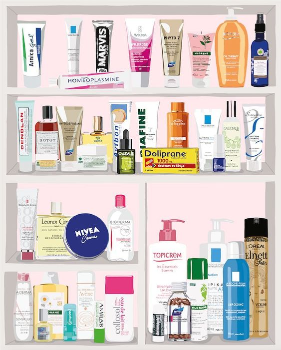

Skincare
Skincare significa cuidado de la piel. Su mayor objetivo es mantener la integridad de la piel, mejorar su apariencia y aliviar las condiciones de la misma. Este debe incluir en sus pasos: limpieza, hidratación y protección, para ver los beneficios y mantener la piel saludable y con mas vitalidad.
Las rutinas generalmente consisten en cuidar tu cara con productos tanto en la mañana como en la noche para lograr tener una textura saludable. Lo más importante de estas es que lleven a cabo todos los días sin excepción , no importando lo cansada que estés o la prisa que lleves. Esto debería convertirse en un básico de nuestro día a día.
Es importante mencionar que estas rutinas responden a las diferentes necesidades de cada tipo de piel.
Para iniciar y encontrar la rutina de SkinCare correcta debes conocer qué tipo de piel tienes. Puedes ir con un/a dermatólogo/a o una cosmetologa para que puedan orientarte.